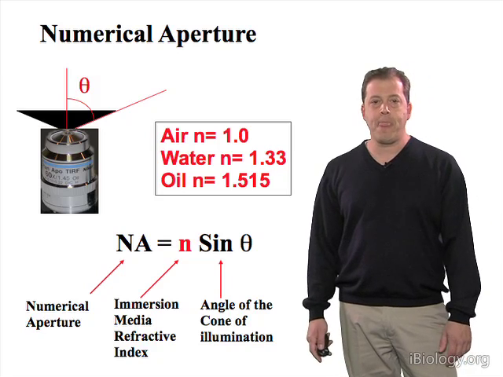
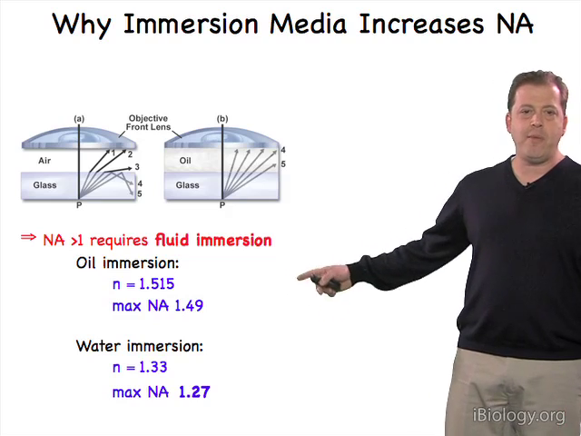
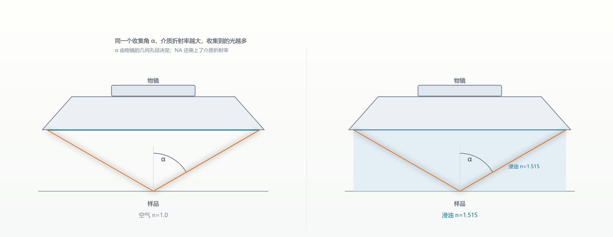
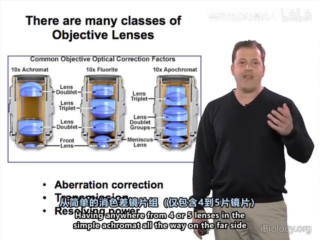
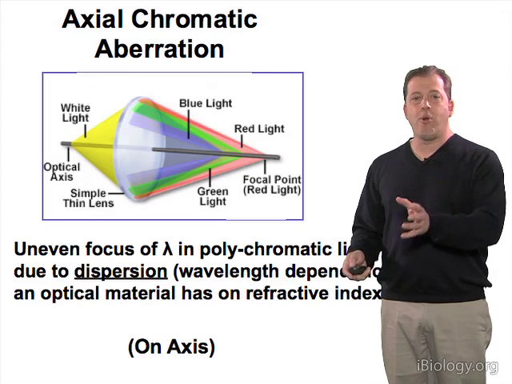
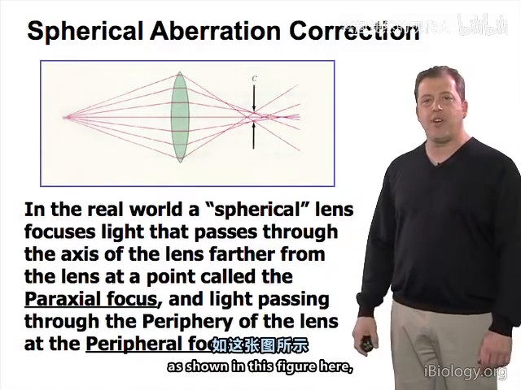
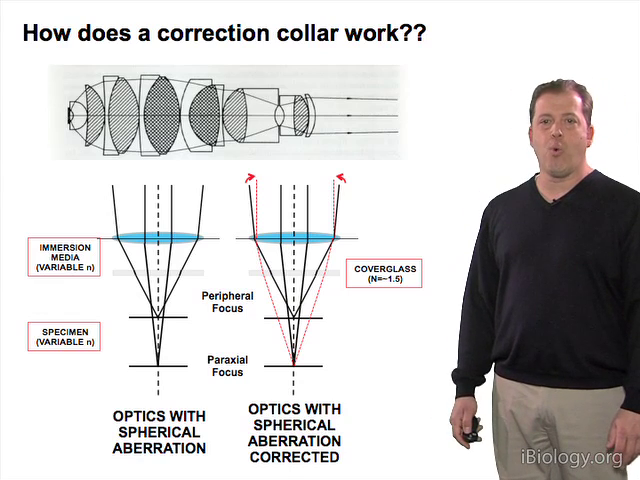
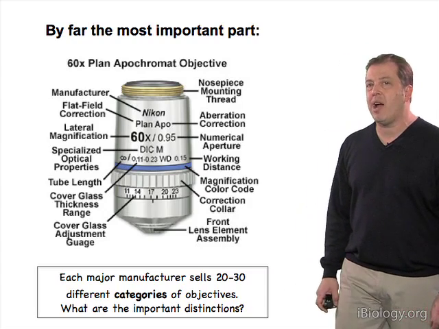
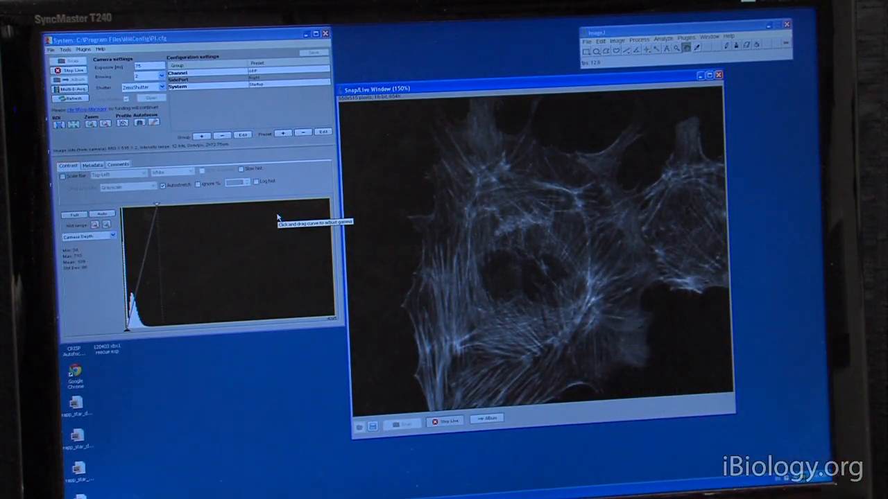

03 物镜与像差：镜筒上那串字到底在说什么
原片：P7 Objectives and Eyepieces · P17 Features of an Objective · P21 Adjusting the Eyepiece and Camera · P22 Correcting Spherical AberrationiBiology 官方页，含讲稿与时间轴；国内可直接看下方 B站 镜像
一句话：物镜是全台最贵的部件，它的核心参数只有一个——NA = n·sinα；剩下的 60×、Plan、Apo、WD 都是在告诉你"它的像差修到了什么程度、能凑多近"。
3.1 NA：一个数同时定三件事
NA = n·sinα，n 是物镜与样品之间介质的折射率，α 是物镜能收的最大半角。
NA 同时决定：分辨率（越大越细）、亮度（越大越亮）、出射光锥角（越大越宽）。

硬天花板：NA 不可能超过介质的 n。
| 介质 | n | NA 上限 |
|---|---|---|
| 空气 | 1.0 | ~0.95 |
| 水 | 1.33 | ~1.27（常用 1.2） |
| 甘油 | 1.47 | ~1.45 |
| 浸油 | 1.515 | ~1.49 |


3.2 镜片数量：一场"校正 vs 透光"的交易
- 简单物镜 4–5 片；平场复消色差可以到 17 片。
- 消色差（achromat）：只把 656 nm（红 C 线）与 486 nm（蓝 F 线）并到一起，并校单色球差；
- 半复消色差管 2–4 色；复消色差（apo）管 4–5 色。
- 玻璃越多校正越好，但吸收也越多——没有免费的午餐。

3.3 像差家族：四个必须认得的
| 像差 | 现象 | 怎么修 |
|---|---|---|
| 球差 | 边缘光比近轴光聚焦更近，焦斑上下不对称 | 校正环 / 换浸没介质 / 挑盖玻片 |
| 色差 | 蓝光焦点近、红光焦点远 | 双胶合、复消色差 |
| 场曲 | 中心与边缘不能同时合焦 | "Plan" 平场设计 |
| 彗差 | 轴外点拖尾巴 | 多半是光路不同轴，调准直 |

3.4 盖玻片 0.17 mm：一个被低估的数字
镜筒上的 ∞/0.17 表示"按 0.17 mm 厚盖玻片校正过"。实际片子偏厚或偏薄，光程就变了，球差立刻出现：
- 上下离焦不对称；
- 没有"最小弥散圆"可对；
- 靠校正环移动物镜后组镜片来补偿。


3.5 读懂镜筒标识
以 Plan Apo 60×/0.95 WD 0.13 为例：
Plan平场 /Apo复消色差 /60×放大（常有颜色环，蓝=60×）/0.95数值孔径WD 0.13工作距离 0.13 mmDIC、Ph1/Ph2/Ph3表示该镜配 DIC 棱镜或带对应 NA 的相差环

3.6 齐焦与屈光度：目视和拍照不同焦怎么办
目镜各自可调焦。正确顺序是：
- 先在相机上对焦；
- 再用目镜调焦环分别调左右眼；
- 之后目视与拍照就同焦面了。

本章自测
- 油镜 NA 1.4、干镜 NA 0.95，同样 488 nm，横向分辨率差多少？
- 为什么 NA 不可能超过浸没介质的折射率？
- 换了一批更厚的盖玻片后图像"怎么对焦都不清楚"，最可能是什么像差？先用什么手段修？
回看：P7（30:12）、P17（4:41）、P21（5:08）、P22（5:23）。